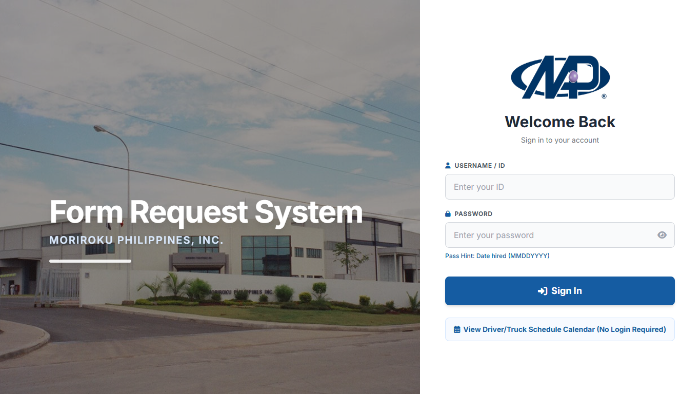

GatePass System
Form request and approval workflow for person and material gate passes, including QR time out/time in, fleet scheduling, role-based approvals, and database-backed audit flow.
Private repo
Case study ready